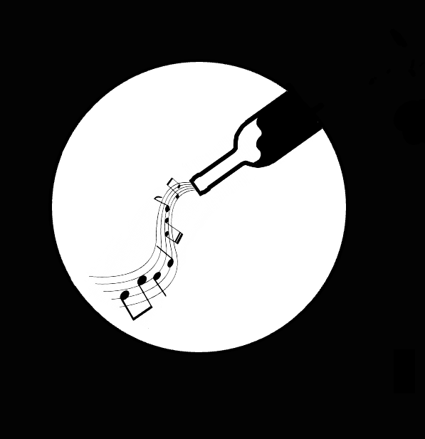

Note da Bere
Home
Gallery
Archivio
About us
Lucio Battisti- La Collina dei Ciliegi
Ella Fitzgerald, Louis Armstrong- Dream a little dream of me
Populous- L'architettura del mare
Muse- Madness
The Smith - There Is a Light That Never Goes Out
Joy Division - Love Will Tear Us Apart
The Cure - Lovesong
Human Tetris - Thinghs I don't Need
Molchat Doma - Судно
Muse - Starlight
Arctic Monkeys - Why’d you only call me when you’re high?
The White Stripes- Jolene
Pink Floyd - Comfortably Numb
Eric Clapton - Cocaine
The Doors - Riders on the Storm
Cream - White Room
The Who- Behind Blue eyes
Red hot chili peppers- Scar Tissue
Fabrizio De André - Dolcenera
Rino Gaetano -Sfiorivan le viole
Pino Daniele - Je So Pazzo
Mina - Tintarella di Luna
Lucio Dalla- Attenti al lupo
Lello Analfino- Cocciu d'amuri
Fiorella Mannoia- Cieli d'Irlanda
The Zen Circus - L’anima non conta
Willie Peyote -Giusto la metà di me
Frah Quintale - Lambada
Brunori Sas - Guardia '82
Motta - La nostra ultima canzone
Prozac+ - Acustica Stonata
I cani - questo nostro grande amore
Richard Hougthen - Saving a Life
L’Impèratrice - Agitations tropicales
Somi - Jike’Iemaweni
Sergio - Mas Que Nada
Mano Negra - Senor Matanza
Manu Chau- Bongo bong
Miriam makeba -pata pata
Vinizio Capossela - All'una e trentacinque circa
Frank Sinatra - Come Fly with me
Sergio Endrigo - Samba delle benedizioni (Samba da benção)
Antonio Carlos Jobim - Aguas De Marco
Antonio Carlos Jobim - Agua de Beber
Nu Genea - Ddoje Facce
Stan getz - Corvocado
Non hai trovato quello che cercavi?
Contattaci!
INVIA